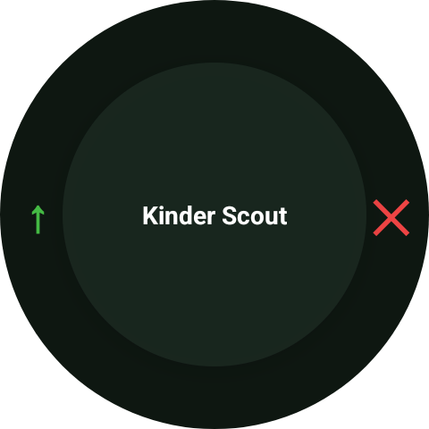
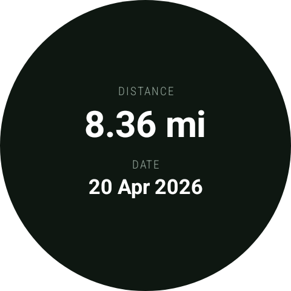

Download GPX
OSM trace ID download from the watch
GPX List
Browse imported, downloaded, and recorded tracks
Track Detail
Opens when a track is tapped
Send to Phone
Export a GPX track to the companion app
External GPX Import
Tracks can also arrive from the companion app or file share intents

Tracks: GPX list with downloaded and imported routes.

Tracks: track detail view after tapping a route.